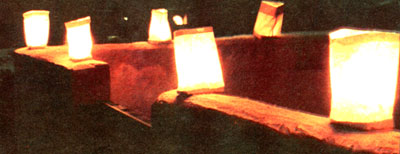

You can make these simple, age-old holiday decorations for pennies
You Can Make These simple , age-old holiday decorations for pennies!
One of the nicest ways to express the magic of this season comes from an old Spanish and Indian tradition and is now common in many parts of the southwestern United States. The distinctive decorations pictured here are called luminarias (or ornamental lights), and they're made of nothing more than candles set in a bed of sand inside a paper bag. True, such lamps may not sound very special, but the humble beacons provide a feast of light when they're used to outline walls or to enclose pathways and gardens. The easy-to-make lanterns not only look beautiful, but their soft glow captures the quiet spirit of simpler Christmases past . . . and they're obvinously less expensive than commercial electric bulbs (which are often too gaudy to harmonize with a down-home yuletide spirit anyway).
All you need to make these holiday-brighteners are a supply of brown paper sacks (the lunch-bag size works fine), dry sand, and small votive candles (which are available in supermarkets, hardware stores, and gift shops). First, turn down the top edge of each bag to form a two-inch cuff that'll provide extra stability after the sack is tilled. Then pour about three inches of sand into each container and place a candle-deep enough in the sand to anchor it upright-smack in the center of the bag.
For safety's sake, luminarias should be used only outdoors ... and it's also a good idea to place them several feet away from shrubbery. (The tiny lanterns will never burn lower than the top of the sane; layer, but a sudden wind could cause the flame to ignite the side of the sack.) For the best effect, space your luminarias two or three feet apart ... and line them up along the driveway, at the edge of the yard, or around the perimeter of a patio. If you have a Spanish-style home (like many people do here in the Southwest), you'll find that the little sentinels look particularly attractive when they outline a tile and-adobe rooftop, but you'll have to use more sand-up to a pound per bag-to secure such elevated ornaments.
No matter where you place the homemade beacons, you'll find that they provide a pleasant reminder of simpler Christmas celebrations ... and a surprisingly warm, festive holiday greeting to those who pass or approach your home The cartoon feature below, Mr. Digwell-as you may or may not know-was originally created for readers of the London Daily Mirror . . . which explains why its advice is often couched in peculiarly British terms. Despite the occasionally strange language, however we think you'll find Mr. D's gardening tips interesting and useful on this side of the pond too.
|
 |
|
|